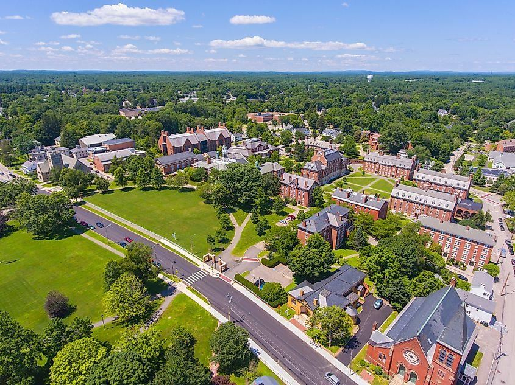

1. 주요 지역과 국제학교
· 사우디아라비아 — 리야드 (Riyadh)
아메리칸 인터내셔널 스쿨 리야드(AISR, 미국식+IB DP)와 브리티시 인터내셔널 스쿨 리야드(BISR, 영국식)가 대표적입니다. 주재원 가정은 대부분 외국인 컴파운드에 거주하며 스쿨버스로 통학합니다.
· 사우디아라비아 — 동부·젯다
동부(다란·알코바르)는 아람코 관련 파견이 많고 인터내셔널 스쿨스 그룹(ISG, 미국식·영국식 캠퍼스 운영)이 중심입니다. 젯다는 브리티시 인터내셔널 스쿨 젯다(영국식·IB)가 대표적입니다.
· 카타르 — 도하 (Doha)
도하 칼리지(영국식 IGCSE/A-Level), 아메리칸 스쿨 오브 도하(ASD, 미국식 AP), 카타르 아카데미(IB). 인기 학교는 대기가 길어 파견 확정 즉시 지원하는 것이 안전합니다.
· UAE — 아부다비 (Abu Dhabi)
아메리칸 커뮤니티 스쿨 아부다비(ACS, 미국식+IB)와 브리티시 스쿨 알쿠바이라트(BSAK, 영국식)에 한국 가정이 많습니다. 두바이 지역 학교(DAA·GEMS 등)는 두바이 페이지를 참고하세요.

국제학교 캠퍼스 (자료사진)
2. 커리큘럼 — 미국식·영국식·IB가 고루 있습니다
· 미국식·AP — AISR·ASD·ACS 등. 알지브라 → 지오메트리 → 프리캘큘러스 → AP 미적분, GPA 누적.
· 영국식·IGCSE/A-Level — BISR·도하 칼리지·BSAK·BIS 젯다 등. G10 IGCSE → G11~12 A-Level.
· IB — 카타르 아카데미, AISR·ACS의 DP 트랙. IB Math AA/AI와 IA·EE·TOK 관리가 핵심.
· 대부분 학교에서 아랍어·이슬람 문화 관련 수업이 현지 규정으로 포함되지만, 외국인 학생은 부담이 크지 않은 수준으로 운영됩니다.
3. G1~G12 학년별 준비 로드맵
영어 리딩·라이팅 기초와 수학 영어 용어. 컴파운드 생활 특성상 또래 환경이 좁을 수 있어 꾸준한 독서·말하기 루틴이 중요합니다. 한국어(모국어) 유지도 함께 챙깁니다.
알지브라·지오메트리 시작(IB 학교는 MYP). 영어 에세이 구조 훈련을 본격화할 시기입니다.
미국식은 GPA 누적 시작, 영국식은 IGCSE, IB는 DP 과목 선택 준비. 수학은 알지브라 2·프리캘큘러스, 과학은 물리·화학·생물 분화.
AP / A-Level / IB DP 본과정. IB 수학 IA·EE, AP 미적분, SAT/ACT, 대학 지원 에세이·인터뷰까지 관리합니다.
국제학교 캠퍼스 (자료사진)
4. 과목별 준비 방법 — 전 과목 관리
알지브라 1·2 · 지오메트리 · 프리캘큘러스 · 미적분(Calculus) · AP Calculus AB/BC · IB Math AA/AI(HL·SL) · IGCSE/A-Level Maths. 영어 용어와 서술형 풀이를 함께 잡습니다.
리딩 · 에세이 라이팅·첨삭 · 문학 분석 · IB English A/B · 확장에세이(EE) · AP English · SAT/ACT · 대학 지원 에세이 · 면접(인터뷰).
물리·화학·생물 (AP/IGCSE/IB). 개념+영어 용어, 랩 리포트와 과학 IA 관리.
IB Korean A 내신 관리 + 귀국 대비 한국 수학·국어 병행. 제2외국어(중국어·스페인어 등) 내신도 함께 관리합니다.
5. 입학·편입 준비
· 입학시험 — 영어(리딩·라이팅), 수학 배치고사, 인터뷰, 이전 성적(성적표 영문 공증이 필요한 경우가 많습니다).
· 편입 — 도하 칼리지·ACS 등 인기 학교는 대기자 명단이 깁니다. 파견이 정해지면 즉시 지원하고, 대기 중에는 배치고사 수준을 미리 맞춰 두는 것이 안전합니다.
6. 중동의 현실 — 한국식 학원이 사실상 없습니다
리야드·다란·도하·아부다비 모두 한인 규모에 비해 한국식 학원이 사실상 없습니다. 컴파운드 중심 생활이라 이동도 제한적이고, 현지 튜터는 영어로만 수업합니다. AP·IB 커리큘럼을 한국어로 설명해 줄 선생님을 현지에서 구하기는 매우 어렵습니다.
대신 시차가 5~6시간으로 유럽보다 짧아 화상 수업 편성이 수월합니다. 현지 오후~저녁(= 한국 밤)과 현지 등교 전 아침(= 한국 오후), 그리고 주말(금·토인 지역이 많음)을 활용해 규칙적인 수업 루틴을 만들 수 있습니다.
7. 귀국 대비 — 최소 6개월 전부터
· 한국 학교 편입 — 국제학교에서 다루지 않은 한국 수학 교과의 빈틈을 메워야 합니다.
· 국내 국제학교 진학 — 채드윅 송도·NLCS 제주·SFS 등의 입학시험(수학 배치고사 + 영어 에세이 + 인터뷰) 준비.
· 재외국민 특례 — 체류 기간 요건과 서류는 특례입학 총정리에서 확인하세요.